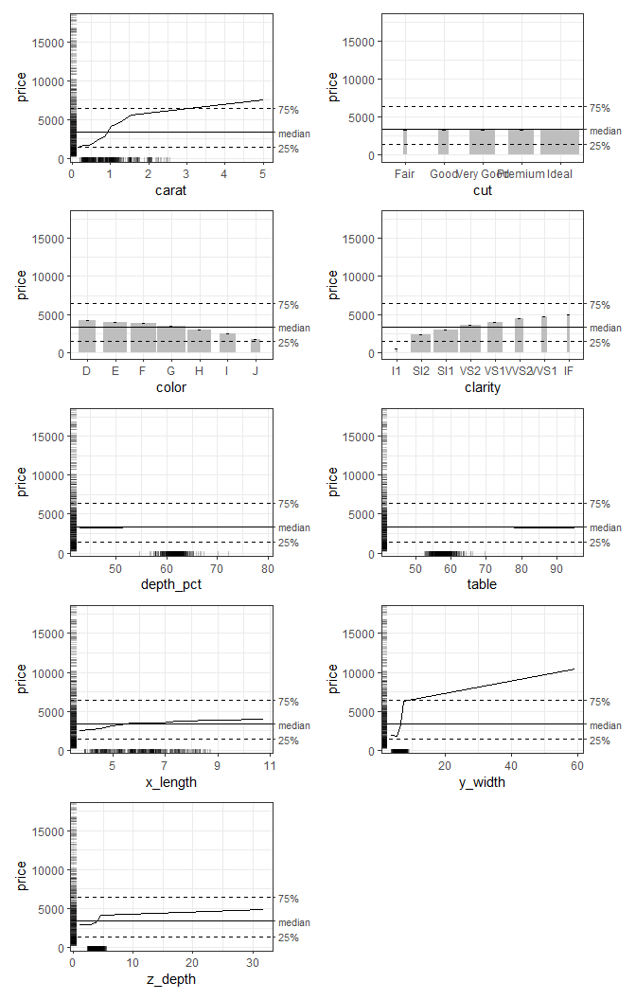
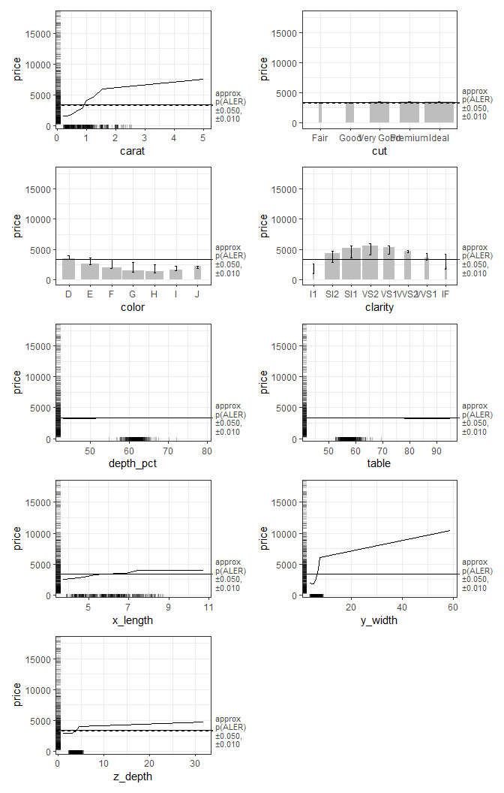
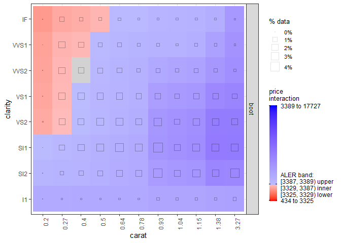

Accumulated Local Effects (ALE) were initially developed as a model-agnostic approach for global explanations of the results of black-box machine learning algorithms (Apley, Daniel W., and Jingyu Zhu. ‘Visualizing the effects of predictor variables in black box supervised learning models.’ Journal of the Royal Statistical Society Series B: Statistical Methodology 82.4 (2020): 1059-1086 doi:10.1111/rssb.12377). ALE has two primary advantages over other approaches like partial dependency plots (PDP) and SHapley Additive exPlanations (SHAP): its values are not affected by the presence of interactions among variables in a model and its computation is relatively rapid. This package reimplements the algorithms for calculating ALE data and develops highly interpretable visualizations for plotting these ALE values. It also extends the original ALE concept to add bootstrap-based confidence intervals and ALE-based statistics that can be used for statistical inference.
For more details, see Okoli, Chitu. 2023. “Statistical Inference Using Machine Learning and Classical Techniques Based on Accumulated Local Effects (ALE).” arXiv. doi:10.48550/arXiv.2310.09877.
The ale package defines four main S7 classes:
-
ALE: data for 1D ALE (single variables) and 2D ALE (two-way interactions). ALE values may be bootstrapped with ALE statistics calculated. -
ModelBoot: bootstrap results an entire model, not just the ALE values. This function returns the bootstrapped model statistics and coefficients as well as the bootstrapped ALE values. This is the appropriate approach for models that have not been cross-validated. -
ALEPlots: store ALE plots generated from eitherALEorModelBootwith convenientprint(),plot(), andget()methods. -
ALEpDist: a distribution object for calculating the p-values for the ALE statistics of anALEobject.
Documentation
You can access the documentation for any of the package’s user-facing functions with the R help() function, e.g., help(ALE). However, the most detailed documentation is found in the website for the most recent development version. There you can find several articles. We particularly recommend:
Other articles with examples and more are available from the articles page.
Installation
You can obtain the official releases from CRAN:
install.packages('ale')The CRAN releases are extensively tested and should have relatively few bugs. However, this package is still in beta stage. For the ale package, that means that there will occasionally be new features with changes in the function interface that might break the functionality of earlier versions. Please excuse us for this as we move towards a stable version that flexibly meets the needs of the broadest user base.
To get the most recent features, you can install the development version of the package from GitHub with:
# install.packages('pak')
pak::pak('tripartio/ale')The development version in the main branch of GitHub is always thoroughly checked. However, the documentation might not be fully up-to-date with the functionality.
Usage
We will give two demonstrations of how to use the package: first, a simple demonstration of ALE plots, and second, a more sophisticated demonstration suitable for statistical inference with p-values. For both demonstrations, we begin by fitting a random forest. We assume that this is a final deployment model that needs to be fitted to the entire dataset.
library(dplyr)
# Load diamonds dataset with some cleanup
diamonds <- ggplot2::diamonds |>
filter(!(x == 0 | y == 0 | z == 0)) |>
# https://lorentzen.ch/index.php/2021/04/16/a-curious-fact-on-the-diamonds-dataset/
distinct(
price, carat, cut, color, clarity,
.keep_all = TRUE
) |>
rename(
x_length = x,
y_width = y,
z_depth = z,
depth_pct = depth
)
# Create a random forest with flexible curves to predict diamond price
# Smooth all numeric variables and include all other variables
# Build the model on training data, not on the full dataset.
rf_diamonds <- ranger::ranger(
price ~ ., diamonds, # train for IML on full dataset
mtry = 7, # number of variables per tree
min.node.size = 4, # minimum leaf (terminal node) size
sample.fraction = 0.465, # fraction of rows to sample
# small forest still accurate for a large dataset; 10× faster than 500 trees
num.trees = 50,
seed = 0 # keep the random forest consistent
)Simple demonstration
For the simple demonstration, we directly create ALE data with the ALE() function and then plot the ggplot plot objects.
library(ale)
# Enable parallelization of the ALE package (set to the number of threads you want)
options(ale.parallel = 2)
# For speed, these examples use retrieve_rds() to load pre-created objects
# from an online repository.
# To run the code yourself, execute the code blocks directly.
serialized_objects_site <- "https://github.com/tripartio/ale/raw/wip/download"
# Create ALE data
# # To run the slow code yourself, uncomment and execute this code block directly.
# ale_rf_diamonds <- ALE(rf_diamonds, data = diamonds)
ale_rf_diamonds <- serialized_objects_site |>
file.path('ale_rf_diamonds.0.5.3.rds') |>
url() |>
readRDS()
# Print a statistical summary of the ALE object
summary(ale_rf_diamonds)<ALE> object of a <ranger> model that predicts `price` (a numeric outcome) from a 39739-row by 10-column dataset.
The results were not bootstrapped.
Mean ALE statistics [get(object, stats = "estimate")]:
# A tibble: 9 × 9
term aled aler_min aler aler_max naled naler_min naler naler_max
<chr> <dbl> <dbl> <dbl> <dbl> <dbl> <dbl> <dbl> <dbl>
1 carat 1333. -1734. 5916. 4182. 14.2 -22.8 52.9 30.1
2 cut 49.1 -80.0 146. 66.3 0.478 -0.788 1.41 0.626
3 color 588. -1709. 2513. 804. 6.12 -22.3 29.8 7.45
4 clarity 715. -2866. 4400. 1534. 7.67 -47.6 62.4 14.8
5 depth_pct 24.9 -134. 166. 31.2 0.247 -1.33 1.61 0.284
6 table 23.4 -113. 146. 32.4 0.235 -1.11 1.40 0.289
7 x_length 263. -860. 1430. 569. 2.58 -9.65 14.9 5.21
8 y_width 1472. -1573. 8629. 7056. 14.5 -20.0 58.5 38.4
9 z_depth 370. -441. 1903. 1462. 3.58 -4.39 18.5 14.2
ALE statistic distributions (no p-values requested) [get(object, stats = c("aled", "aler", "naled", "naler"))]:
# A tibble: 36 × 7
statistic term estimate conf.low mean median conf.high
<ord> <chr> <dbl> <dbl> <dbl> <dbl> <dbl>
1 aled carat 1333. 1333. 1333. 1333. 1333.
2 aled cut 49.1 49.1 49.1 49.1 49.1
3 aled color 588. 588. 588. 588. 588.
4 aled clarity 715. 715. 715. 715. 715.
5 aled depth_pct 24.9 24.9 24.9 24.9 24.9
6 aled table 23.4 23.4 23.4 23.4 23.4
7 aled x_length 263. 263. 263. 263. 263.
8 aled y_width 1472. 1472. 1472. 1472. 1472.
9 aled z_depth 370. 370. 370. 370. 370.
10 aler carat 5916. 5916. 5916. 5916. 5916.
11 aler cut 146. 146. 146. 146. 146.
12 aler color 2513. 2513. 2513. 2513. 2513.
13 aler clarity 4400. 4400. 4400. 4400. 4400.
14 aler depth_pct 166. 166. 166. 166. 166.
15 aler table 146. 146. 146. 146. 146.
16 aler x_length 1430. 1430. 1430. 1430. 1430.
17 aler y_width 8629. 8629. 8629. 8629. 8629.
18 aler z_depth 1903. 1903. 1903. 1903. 1903.
19 naled carat 14.2 14.2 14.2 14.2 14.2
20 naled cut 0.478 0.478 0.478 0.478 0.478
21 naled color 6.12 6.12 6.12 6.12 6.12
22 naled clarity 7.67 7.67 7.67 7.67 7.67
23 naled depth_pct 0.247 0.247 0.247 0.247 0.247
24 naled table 0.235 0.235 0.235 0.235 0.235
25 naled x_length 2.58 2.58 2.58 2.58 2.58
26 naled y_width 14.5 14.5 14.5 14.5 14.5
27 naled z_depth 3.58 3.58 3.58 3.58 3.58
28 naler carat 52.9 52.9 52.9 52.9 52.9
29 naler cut 1.41 1.41 1.41 1.41 1.41
30 naler color 29.8 29.8 29.8 29.8 29.8
31 naler clarity 62.4 62.4 62.4 62.4 62.4
32 naler depth_pct 1.61 1.61 1.61 1.61 1.61
33 naler table 1.40 1.40 1.40 1.40 1.40
34 naler x_length 14.9 14.9 14.9 14.9 14.9
35 naler y_width 58.5 58.5 58.5 58.5 58.5
36 naler z_depth 18.5 18.5 18.5 18.5 18.5 
For an explanation of these basic features, see the introductory vignette.
Statistical inference with ALE
The statistical functionality of the ale package is rather slow because it typically involves 100 bootstrap iterations and sometimes 1,000 random simulations. Even though most functions in the package support parallel processing, such procedures still take some time. So, this statistical demonstration gives you downloadable objects for a rapid demonstration.
First, we need to create a p-value distribution object so that the ALE statistics can be properly distinguished from random effects.
# Create p_value distribution object
# # Rather slow because it retrains the model 100 times.
# # To run the slow code yourself, uncomment and execute this code block directly.
# p_dist_rf_diamonds_readme <- ALEpDist(
# rf_diamonds, diamonds,
# # Normally should be default 1000, but just 100 for a quicker demo.
# rand_it = 100
# )
p_dist_rf_diamonds_readme <- serialized_objects_site |>
file.path('p_dist_rf_diamonds_readme.0.5.3.rds') |>
url() |>
readRDS()Now we can create bootstrapped ALE data and see some of the differences in the plots of bootstrapped ALE with p-values:
# Create ALE data with p-values
# # To run the slow code yourself, uncomment and execute this code block directly.
# ale_rf_diamonds_stats_readme <- ALE(
# rf_diamonds,
# # generate ALE for all 1D variables and the carat:clarity 2D interaction
# x_cols = list(d1 = TRUE, d2 = 'carat:clarity'),
# data = diamonds,
# p_values = p_dist_rf_diamonds_readme,
# # Usually at least 100 bootstrap iterations, but just 10 here for a faster demo
# boot_it = 10
# )
ale_rf_diamonds_stats_readme <- serialized_objects_site |>
file.path('ale_rf_diamonds_stats_readme.0.5.3.rds') |>
url() |>
readRDS()
# Create an ALEPlots object for fine-tuned plotting
ale_plots <- plot(ale_rf_diamonds_stats_readme)
# Plot 1D ALE plots
ale_plots |>
# Only select 1D ALE plots.
# Use subset() instead of get() to keep the special ALEPlots object
# plot and print functionality.
subset(list(d1 = TRUE)) |>
print(ncol = 2)
# Plot a selected 2D plot
ale_plots |>
# get() retrieves a specific desired plot
get('carat:clarity') 
For a detailed explanation of how to interpret these plots, see the article on ALE-based statistics for statistical inference and effect sizes.
Getting help
If you find a bug, please report it on GitHub. Be sure to always include a minimal reproducible example for your usage requests. If you cannot include your own dataset in the question, then use one of the built-in datasets to frame your help request: var_cars or census. You may also use ggplot2::diamonds for a larger sample.
Citations
If you find this package useful, I would appreciate it if you would cite the appropriate sources as follows, depending on what aspects you use.
Core idea of accumulated local effects
Apley, Daniel W., and Jingyu Zhu (2020). “Visualizing the effects of predictor variables in black box supervised learning models.” Journal of the Royal Statistical Society Series B: Statistical Methodology 82, no. 4: 1059-1086.
ALE statistics (ALED, ALER, NALED, NALER)
Okoli, Chitu (2023). “Statistical inference using machine learning and classical techniques based on accumulated local effects (ALE).” arXiv preprint arXiv:2310.09877.
Okoli, Chitu (2024). “Model-Agnostic Interpretability: Effect Size Measures from Accumulated Local Effects (ALE)”. INFORMS Workshop on Data Science 2024. Seattle, USA.
ALE-based inference (confidence regions)
Okoli, Chitu (2023). “Statistical inference using machine learning and classical techniques based on accumulated local effects (ALE).” arXiv preprint arXiv:2310.09877.
Okoli, Chitu (2024). “Reliable Inference from Human-Centred Datasets with Accumulated Local Effects”. INFORMS Annual Meeting 2024,Seattle, USA.
Use of the ale package (the software itself)
Okoli, Chitu ([year of package version used]). “ale: Interpretable Machine Learning and Statistical Inference with Accumulated Local Effects (ALE)”. R software package version [enter version number]. https://CRAN.R-project.org/package=ale.